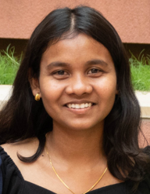

Riha Sanjay Kokode

Summary
Current student looking to join the workforce to gain real-world experience. Ability to complete tasks on time in both individual and team settings. Dependable and reliable ready to learn and grow with your company
Education
BACHELOR OF TECHNOLOGY
National institute of technology delhi, delhi
Computer science and engineering
Expected graduation June 2024
GPA: 6.77 , 7th SEM
CLASS XII
Shri datta vidya mandir, butibori, nagpur
Computer Science, Physics, Chemistry, Mathematics and Statistics, English
June 2019
Percentage: 87.54%
CLASS X
Carmel academy, amgoan
Mathematics, Science, English Comm, Hindi, Social Science
June 2017
CGPA: 10
Work Experience
-
RAP - Event Management System:
A single platform to view a variety of venues and menus without using much of customer’s
time and effort which serves as a portal to register and plan an event. It provides information related to the venues available,
food varieties, and other related staff and officials concerned with the organizing of the event.
- Technologies Used: HTML, CSS, JS, MySQL, PHP, XAMPP
-
Quiz Game:
A fun-filled project developed using C for interactive learning. Test your knowledge with ease and enjoy the journey.
-
Data Analysis:
Leveraged data analysis skills to solve complex problems and driven data-driven decision-making
- Technologies Used : MySQL and Excel
Skills
Technical Skills
- Programming Language: C, C++
- Database: MySQL
- Web Technology: HTML, CSS, Bootstrap, JavaScript
- Computer Fundamentals: OOPS, DBMS, Operating System, Data Structure
Non Technical Skills
- Management
- Excellent Communication
- Multitasker
- Teamwork
- Planning
Award and Certifications
Tribal Development Department Government of Maharashtra, Meritorious Student Award Class XII , 2019
Other